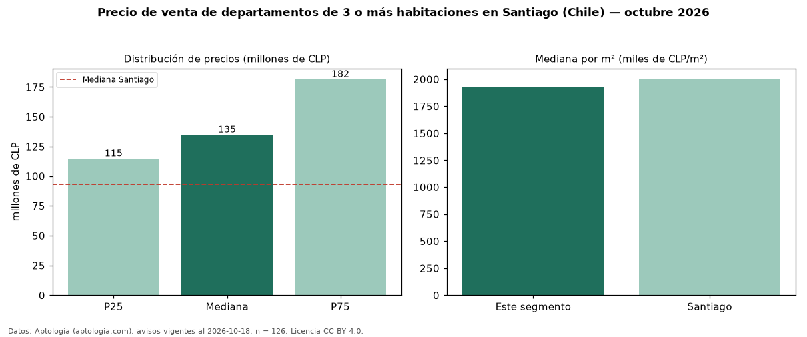

Precio de venta de departamentos de 3 o más habitaciones en Santiago (Chile) — octubre 2026
En Santiago (Chile), la mediana de precio de venta de departamentos de 3 o más habitaciones es CLP 135 millones, según 126 avisos vigentes. Eso es 45 % por encima de la mediana de todos los departamentos en venta de Santiago (CLP 93 millones). Por metro cuadrado, la mediana es CLP 1,92 millones/m² (n = 91 avisos con área). Con el precio por m² de arriendo del mismo segmento (CLP 8.941/m² al mes), la rentabilidad bruta implícita es 5,6 % anual (aproximación con medianas de ofertas distintas). El área mediana anunciada es 70 m². La mitad central de los avisos va de CLP 115 millones a CLP 182 millones (razón 1,6), una dispersión moderada. Datos: Aptología (aptologia.com), CC BY 4.0 — https://www.aptologia.com/cl/venta/santiago. Archivos: PDF, CSV con las cifras y gráfica PNG.

| Avisos únicos | 126 |
|---|---|
| Percentil 25 | COP 115.000.000 |
| Mediana | COP 135.000.000 |
| Percentil 75 | COP 181.500.000 |
| Mediana por m² | COP 1.923.076 |
Fuente: avisos vigentes de portales inmobiliarios recopilados por Aptología, deduplicados (mínimo 30 avisos únicos por celda). Precios pedidos, no cerrados. Fecha: 2026-10-18.